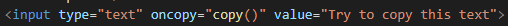
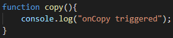
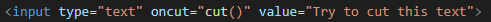
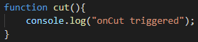

This event fires when the user copies the content of an element
Thsi also fires when the user copies an element like an image.
The oncopy attribute is mostly used on input elements with type="text"
There are three ways to copy an element/the content of an element
CRTL + C
Select copy from the edit menu in your browser
Right click to display the context menu and select the "Copy" command
Examples:
This is how its coded:


Syntax:
<element oncopy="script">
Technical Details
Supported Html Tags : All HTML elements
oncut
This event fires when the user cuts the content of an element
Although the oncut attribute is supported by all HTML elements, it is not actually possible to cut the content of an element unless the conteteditable is set to true
The oncut attribute is mostly used on input element with the type="text"
There are three ways to cut the content of an element.
CTRL X
Select "Cut" from the edit menu in your browser
Right click to display the context menu and select the "Cut" command
Examples:
This is how its coded:


Syntax:
<element oncut="script">
Technical Details
Supported Html Tags : All HTML elements
onpaste
This event fires when the user pastes some content in an element.
Although the onpaste is supported by all html elements its not possible to paste content in most elements unless it has the contenteditable to true
The onpaste attribute is mostly used on input nelements with the type="text"
There are 3 ways to paste content in an element:
CRTL V
Select "Paste" from the edit menu in your browser
Right click to display the context menu and select the "Paste" command.